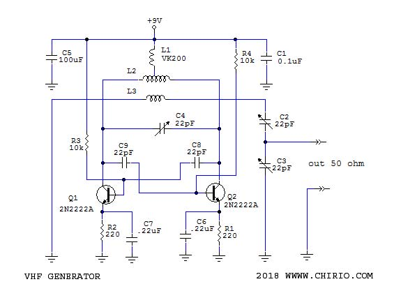
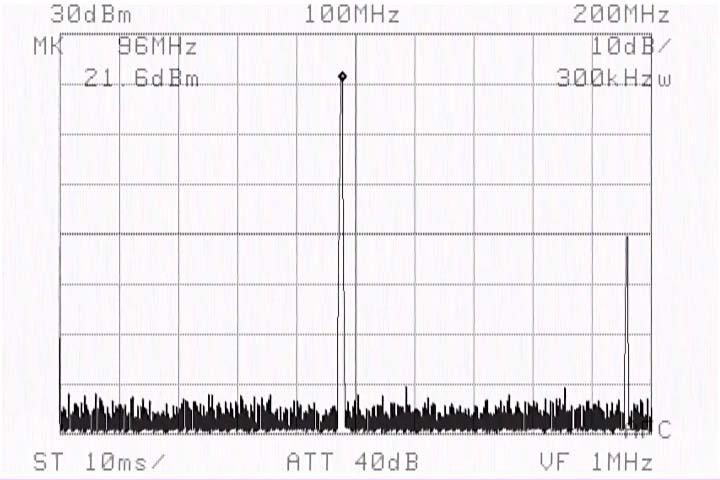
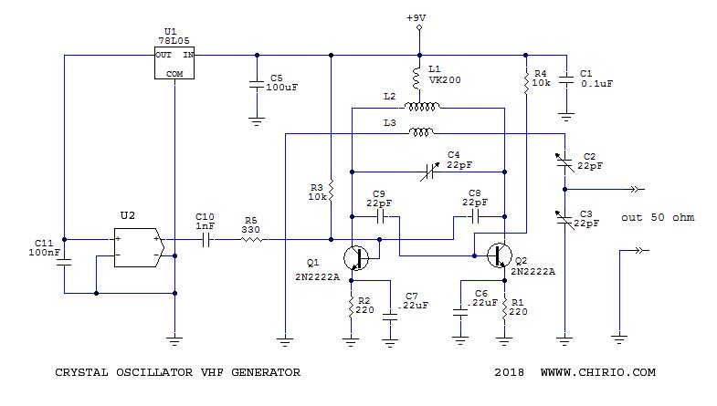
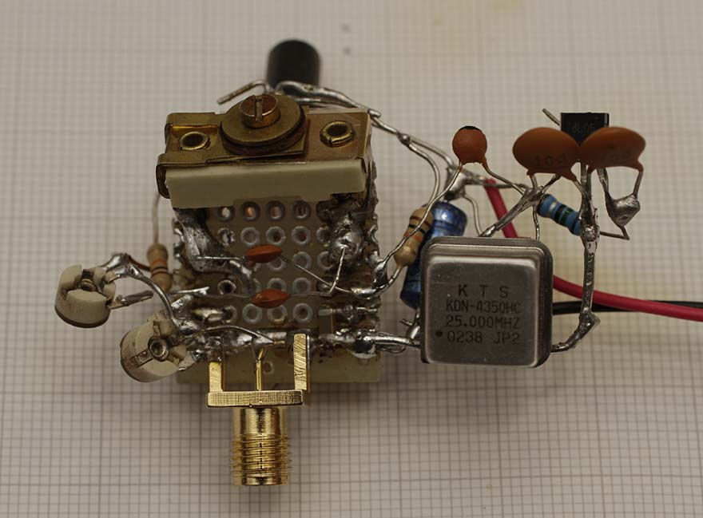
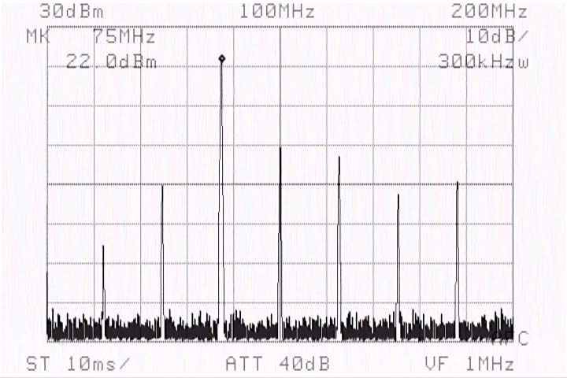
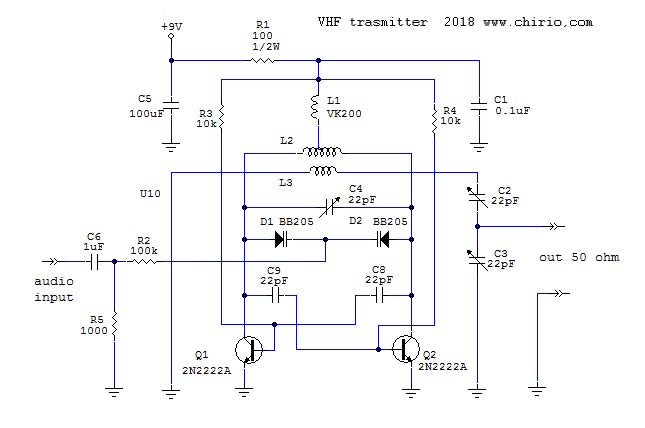
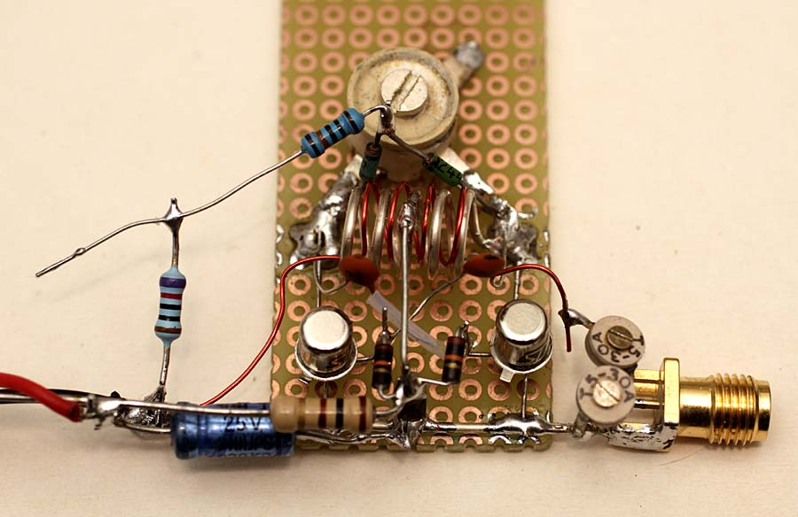

Radio & antenne
Simple RF generator 70-400 MHz con 2N2222A
Indice della pagina
Premessa
Gennaio 2018
Questo è lo schema di un multivibratore astabile, usato per generare RF. I risultati in banda VHF sono ottimi, con i transistor 2N2222A metallo si arriva tranquillamente a 22dBm in uscita, inoltre è facile salire fino a 500 MHz.
Portando un segnale armonico sulla base di uno dei due transistor si può facilmente ottenere un aggancio a frequenza stabile.
Utilizzando diodi Varicap è possibile modulare il segnale per ottenere un trasmettitore in banda FM.
Pertanto un buon oscillatore con segnale di uscita a livelli importanti per fare prove di trasmissione o tarature su antenne e su apparati sperimentali.
S chema elettrico

- Lo schema del generatore è molto semplice, si tratta di un oscillatore astabile simmetrico, la particolarità è che viene fatto lavorare in RF.
La bobina L2 viene realizzata con 5 spire di filo argentato diametro 1mm avvolte spaziate su diametro 6mm.
- Il segnale in uscita è ottenibile con un secondo avvolgimento con filo isolato (Teflon), realizzato con 4 spire posizionato simmetrico sopra L2, con un buon acccopiamento il segnale in uscita arriva a 22dBm.
- Il condensatori C8 e C9 riportano il segnale invertito al transistor opposto, avviando così un'oscillazione continua. Il loro valore determina la frequenza di oscillazione assieme alle resistenze R3 e R4.
- Le resistenze R3 e R4 determinano la polarizzazione del transistor e concorrono anche al valore della frequenza, per arrivare al limite delle frequenza in alto, dobbiamo usare il valore più basso possibile, con 10K si ha il funzionamento migliore.
- Valori dei componenti per le varie bande:
f=70 MHz C8/C9 = 47pF L2= 7-9spire
f=100 MHz C8/C9 = 22pF L2= 5spire
f=430 MHz C8/C9 = 4.7pF L2= 3spire
sono valori di massima che portano le oscillazioni alle frequenze elencate, in funzione del tipo di assemblaggio e disposizioni dei componenti può essere necessario variare il valore dei condensatori. Importante la L2, deve essere sempre con le spire dispari per avere la presa centrale simmetrica.
Anche per l'avvolgimento di uscita si rende necessario variare i valori, in questo caso spire in numero pari per restare centrati (simmetrici) sul primario L2.
- Il condensatore variabile C4 permette delle piccole tarature sulla frequenza di lavoro, è possibile anche non montarlo e o mettere al posto dei Varicap sia per controllare la frequenza che per modulare il segnale tramite un circuito ingresso Bassa Frequenza (segnale audio).
- Le resistenze R1 e R2 limitano la corrente del Q1 a un max di 30mA con alimentazione 9V, durante le prove consiglio di non superare i 9V altrimenti si rischia di bruciare il transistor. La resistenza in serie all'emettitore ha diverse funzioni: aumenta la linearità e aiuta a prevenire il sovraccarico del transistor. Inoltre, "uniforma" il guadagno dei transistor come nel nostro caso, i dispositivi push-pull funzionanti in tandem forniscano parti uguali del carico in uscita. Il resistore è normalmente calcolato per fornire circa 1 volt di caduta con pieno carico di corrente.
- Per induttore di arresto L1 si utilizza una VK200, vanno bene anche 10 spire avvolte su una barretta di ferrite.
- Il tutto va inserito in un contenitore metallico per evitare irradiazioni dirette, che possono disturbare le trasmissioni FM su questo range di frequenze.
- Regolando C2 e C3 si ottiene il migliore accoppiamento per l'uscita su 50 Ohm. Per visualizzare la potenza in uscita molto utile lo schema del Power Meter realizzato con strumento analogico, modificare i valori per leggere 500mW o 1W in uscita, Spy Bug FM .
{kind=link}
Questo è il circuito sperimentale, funzionante, si nota l'avvolgimento del secondario L3 in rame smaltato, avvolto sulla L2 e sulla destra i due trimmer per regolare il migliore segnale in uscita. In alto la VK200.
{kind=link}
Questo è il circuito visto da dietro, il grosso compensatore è C4 che permette le piccole variazioni di frequenza. Uscita con terminale SMA-F.
Segnale Uscita

Questo esempio, è il segnale in uscita su carico 50 ohm, siamo a 96 MHz con 21.6dBm, la frequenza si può regolare in modo fine tramite il compensatore C4. Maggiore campo di regolazione modificando il valore dei condensatori C8 e C9. Per rientrare con il funzionamento regolare è necessare adeguare il numero di spire della L2.
Schema elettrico con Xtal

Questo è lo schema consigliato per aumentare la stabilità in frequenza dell'oscillatore, la frequenza di lavoro viene agganciata ai battimenti in armonica partendo dalla frequenza fondamentale dell'oscillatore quarzato vedi RF generatore armoniche.
Nel caso del circuito in prova è stato utilizzato un oscillatore U2 da 25 MHz, pertanto avremo le armoniche a 75, 100, 125 MHz, per avere un numero maggiore di armoniche è da usare un quarzo con frequenza più bassa tipo 10 MHz, così da avere battimenti stabili a 90, 100, e 110...ecc. Per chi vuole passi ancora più stretti, un quarzo da 1 MHz permette di avere la possibilità di agganciare le frequenze a passo di 1 MHz tipo 90,91, 92...MHz, diventa però più difficile la taratura fine con C4 e c'è il rischio che l'oscillatore sia instabile saltando tra due frequenze vicine.
L'aggangio alle varie frequenze armoniche va fatto ruotando il condensatore variabile (compensatore) C4 modificando l'accordo. La frequenza in uscita sarà quella di maggiore ampiezza, il tutto si può anche solo leggere con un frequenzimetro e/o oscilloscopio, ma visualizzare il segnale con un Analizzatore di Spettro è sempre la soluzione migliore.
Attenzione che alcuni moduli a quarzo lavorano a 3.3V pertanto il regolatore di tensione U1 va sostituito con uno da 3.3V 100mA.

Si vede l'oscillatore a quarzo collegato sul circuito. L'aggancio di frequenza si ottiene portando il segnale sulla base di uno dei due transistor. Il tutto è molto sperimentale, ma funziona egregiamente bene, appena possibile si farà una versione su pcb, più bella da vedere.

Questo è il segnale in uscita su carico 50 ohm stabilizzato con quarzo, siamo a 75 MHz con 22dBm, la frequenza di aggancio si può regolare tramite il compensatore C4. La variazione di C4 porterà a 100 MHz oppure indietro a 50 MHz sempre che l'oscillazione sia ancore in range di lavoro stabile tramite il valore della bobina L2 e la coppia C8 e C9.
Miglioramenti

Con questo schema otteniamo dei miglioramenti circuitali, i transistor vengono collegati di emettitore direttamente a massa e le due resistenze limitatrici di corrente vengono sostituite dalla R1 direttamente in serie al comune di alimentazione.
Otteniamo vantaggi nel montaggio SMD, i transistor possono dissipare meglio il calore attraverso la piazzola comune di massa, e variando la R1 con un trimmer da 1000 ohm, possiamo regolare la potenza in uscita. Questa configurazione più compatta si presta meglio per salire di frequenza.
Attenzione che i transistor siano dello stesso lotto e tutto va montato il più simmetrico possibile, la mancanza delle resistenze di emettitore può creare instabilità.
Con un segnale bassa frequenza di 200-400mV applicato sui due diodi Varicap D1 e D2, possiamo dare una modulazione di Frequenza al segnale in uscita. Eventualmente aggiungere uno stadio amplificatore bf.
Avendo un valore minore di tensione sul collettore anche la potenza di uscita risulterà più bassa, dove con 9V avevamo +22dBm sull'uscita adesso sono solo più +20dBm.
Sempre possibile l'aggancio in frequenza dall'oscillatore a quarzo, come mostrato più in alto di questa pagina, utile uno stadio amplificatore RF alimentato a 12V con 2N3866 per portare l'uscita a +25 dBm. Vedi FM Spy bug.
Da come si vede nella foto successiva nel prototipo manca la L1, mentre la L2 con la presa centrale perfettamente simmetrica e condensatore C1 saldato il più corto e vicino possibile possiamo fare a meno dell'induttore, i risultati in uscita sono sempre quelli con valori di alimentazione 9.0V uscita +20dBm a 100 MHz, quindi un componente ingombrante in meno. In alto vicino al condensatore variabile si notano i due Varicap e la resistenza da 100k per la modulazione.
Applicando una tensione variabile all'ingresso Varicap possiamo ottenere un oscillatore Sweep, ideale è una forma a dente di sega, ma va anche bene la forma sinusoidale e triangolare. Non va bene la forma d'onda quandra in quanto riporta solo i valori estremi senza rimanere all'interno del range di oscillazione.

Applicazioni
Visto il largo spettro di frequenze che si possono generare le applicazioni sono molte:
- Prove di trasmissione.
- Prove su antenne.
- Verifiche su componenti tipo filtri o amplificatori.
- Grazie alla configurazione quarzo, stabili Beacon generator o simili...
© Roberto Chirio: all rights reserved.